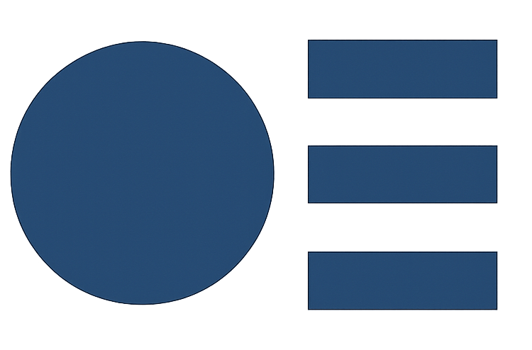

We help stop vulnerable individuals being lured into
violent extremism
Could your concern be an emergency? If so,
call 999
What is Prevent?

Tackles the ideological causes of terrorism.
Intervenes early to support people susceptible to
radicalization.
Enables people who have already engaged in terrorism
to disengage and rehabilitate.
Spot Signs of Radicalization
Glorifying Violence
Much more likely to be a male, a "lone wolf" and adopt a "commando" persona for a self-appointed mission, often with mixed ideological motives. Individuals like 'Anders Breivik'.
Adoption of a New, Totalizing Identity
A dramatic change in appearance, lifestyle, and personality to visibly signal complete and total allegiance to the new ideology and group. So-called "Islamic State" still poses the biggest threat.
Social Isolation
Withdrawing from mainstream friends and family to immerse themselves in secretive, often online, echo chambers that reinforce and escalate extreme views. "Incels" are a modern phenomena of this.
Dehumanization and 'Us vs. Them' Language
Using words that strip humanity from others, framing them as an 'enemy', 'threat', or 'vermin' to justify hatred and aggression. Neo-Nazis are a classic example.
Fixation on Grievance
An obsessive focus on perceived injustices against their group. Violent far-left extremists are a group that often thrives on oppression narratives.